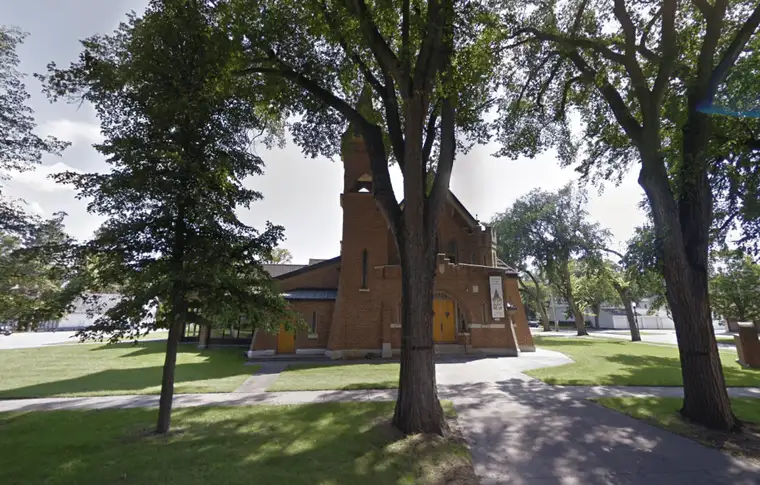

FARGO — On May 30, a day of peaceful protests that ended with rioting in downtown Fargo provoked by the death of George Floyd in Minneapolis, the Rev. Raymond Courtright was roused by a phone call, and then another.
“People were asking, ‘Are you locking your doors?’ And I said, ‘For what? If they want to come in, bring them in!’” he shares.
Courtright, pastor of St. Anthony of Padua Catholic Church, 701 10th St. S., wasn’t worried rioters would harm the church — but he was concerned about souls.
“By 8:30, we had over 100 people livestreaming and praying the rosary for peaceful resolve,” he says, noting that COVID-19 preparations helped them act quickly, with online connections already in place.
Though many prayed online, Courtright texted nearby parishioners, and some showed up in person.

“One said, ‘Father, I’m in my pajamas,’” he recalls. “Not that you would have noticed, but it was neat that they were coming over at a moment’s notice.”
The prayers “were answered quite beautifully,” he says, given “no lives lost or injuries.”
Courtright hopes the experience can be a way to have additional conversations on racism and what the church can do to combat it peacefully and prayerfully.
“Our St. Vincent de Paul Society is putting together a conference one evening featuring our own parishioners who’ve experienced racism firsthand,” he says, noting that the St. Anthony’s community includes people from all over the world — Africa, Vietnam, Sri Lanka and more.
“We want to talk about how living our faith can break down these barriers and help us to be who we’re called to be,” he says. “Each of us has dignity, because we’re God’s children, and that dignity has to be respected in every person.”
In his work as a Cass County Jail chaplain, he says he talks about ways we are culpable in this evil, including “just kind of looking the other way,” or being in a position to address racism, but not doing so out of fear of being disrespected.
“Or, it can simply be indifference.”
Removal of God from society, which prevents us from seeing the transcendent dignity in one another, hasn’t helped, Courtright notes, nor has media showing mostly negative stories.
“And then there are the things Jesus said about loving our neighbor without exception,” he adds. “This is not an option. Everyone should see their neighbor as another self, and above all bearing (Christ’s) life, and making possible the means necessary for each person to live with dignity.”
The tendency to make jokes about those who are different than us — including with each new wave of immigrants – is nothing new, Courtright says.
“It’s for each of us in our hearts to figure out,” he continues. “We need to ask, ‘What has been the position in my life when it comes to those in my hometown who are second-class citizens, who are not treated well?’”
He mentions his own flock and the work they do for the poor, including “hauling in food for the food pantry.” But more can always be done, he says.
“What do you do in your own life to help others? How do you show your goodness to others for the gifts you receive from God?”
Rioting isn’t the answer, he says.
“Tearing down the statues and burning down buildings, it hurts more Black people, because they’re strapped with the blame, and most of them don’t want anything to do with it,” he says.
But unrest does shed light on injustice that needs attention. And a few days after he led his parishioners in praying the rosary, Courtright brought some light through sharing “The Prayer of Saint Francis,” or “Make Me a Channel of Your Peace,” as a concluding prayer with those gathered in the Scheels Arena parking lot for the Unite in Prayer event in early June.
“Let’s keep our eye on the Lord,” he said. “If we keep looking at ourselves, we’re never going to get out of this mire. We have to keep our eyes on (Christ). He’s the one who said, ‘Forgive them,’ and he’s the one who teaches us to lay down our lives and give up what we have to help others.”
[For the sake of having a repository for my newspaper columns and articles, I reprint them here, with permission, a week after their run date. The preceding ran in The Forum newspaper on July 24, 2020.]